KINELOAD · completed · beat its 30–50 mW power target · October 2026
Suspended-Load Energy-Harvesting Backpack
I joined this University of Auckland research project after earlier students had explored suspended-load backpack mechanisms and the research group had developed a bidirectional rotating electromagnetic generator. I took the backpack from CAD to a working, wearable prototype and then proved it on the oscilloscope myself. I designed and built the suspended-load platform shown below: the full backpack CAD and mechanical design, laser-cut acrylic plates, 3D-printed parts, a welded generator support structure, and all of the coil wiring on the group's generator prototype. On 21 October 2026 I ran the power tests: walking at 4 km/h with the backpack on, it delivered 55 mW average into a 3.3 kΩ load, above the project's 30–50 mW target, and 81 mW when hand-cranked.
Research Snapshot
Backpack CAD and mechanical design, laser cutting, 3D printing, welding, assembly, all generator coil wiring and electrical fault-finding.
Developed within the University of Auckland Mechanical and Mechatronics Engineering research group.
The generator belongs to the group's prior work; I do not present its design as my own.
Relative vertical payload motion is transmitted to the generator through a direct mechanical path.
Average power into a 3.3 kΩ load while walking at 4 km/h with the backpack on. Hand-cranked: 81 mW.
Set-up, oscilloscope capture, treadmill runs and data analysis. Earlier shaker tests and the phone-charging and pulse-oximeter demos were led by doctoral researchers, with my participation.
How the Mechanism Works
- The rear plate is fixed to the backpack frame and follows the wearer's torso.
- The front plate carries the suspended load and translates vertically on two guide rods.
- Walking creates relative motion between the fixed frame and moving load plate.
- A rack attached to the moving plate drives a pinion coupled to the group's existing generator.
- Elastic bands support the payload in the current physical build, replacing the earlier spring-layout concept.
Work Completed
Engineering Deliverables
- Reviewed the group's earlier student reports and separated prior generator work from the new mechanical platform.
- Built a modular SolidWorks assembly around a fixed rear plate and moving payload plate.
- Built the guide, rack, pinion and generator-mount interfaces for the physical platform.
- Prepared an exploded view, bilingual BOM, motion views and manufacturing layouts.
- Exported plate DXFs and laser-cut the acrylic plates; kept a fixed mounting-hole pattern so the drive can be upgraded without recutting the plates.
- 3D-printed parts, welded the generator support structure and assembled the platform.
- Wired every coil on the group's generator prototype and brought the coils together to a single output.
- Learned to account for printed-part clearance when a nominal 5 mm hole did not accept an M5 bolt.
- Earlier, took part in doctoral-researcher-led shaker tests and demonstrations of storage-assisted phone charging and pulse-oximeter operation.
How the Work Moved Forward
This project depended on communication, not only CAD. I reviewed mechanism choices with my supervisor and previous students, then spoke with technicians in different university labs and workshops about cutting, printing, assembly access and practical tolerances. Their feedback became the next CAD revision or test.
Fault-Finding: When the Generator Gave No Output
- Symptom. After assembly, the generator produced no output at the terminals.
- Method. The coils are wired together to one output, so a single break anywhere kills the whole circuit. I checked continuity with a multimeter joint by joint along the coil chain instead of guessing.
- Cause. A coil lead had been worn through by friction against an internal contact surface.
- Result. After the repair, the output came back.
Power Test, 21 October 2026: Target Beaten
I wired the generator output across a 3.3 kΩ resistor, captured every run on a SIGLENT SDS1204X-E oscilloscope, then walked on a treadmill with the backpack on. I calculated RMS voltage, power and energy point by point from the raw samples rather than reading the screen, and kept every valley in the AC waveform, so the averages are honest averages. The project target was 30–50 mW; walking at 4 km/h gave 55 mW.
| Condition | Analysis window | RMS voltage | Average power | Energy in window |
|---|---|---|---|---|
| Hand-cranked | 10–50 s (40 s) | 16.34 V | 80.96 mW | 3.24 J |
| Worn on treadmill, 4 km/h | 15–105 s (90 s) | 13.49 V | 55.18 mW | 4.97 J |
| Worn on treadmill, 5 km/h | 15–105 s (90 s, mixed input) | 17.22 V | 89.86 mW | 8.09 J |
What the 5 km/h run showed
- About 205 mW averaged over the first 39 s, when I moved vigorously and the load swung to its end stops.
- About 50 mW over 70 s once I deliberately calmed the movement, still at the top of the target range.
- About 105 mW averaged over the whole two-minute recording.
- The lesson: how freely the payload moves matters as much as walking speed. That is exactly what I will tune next.
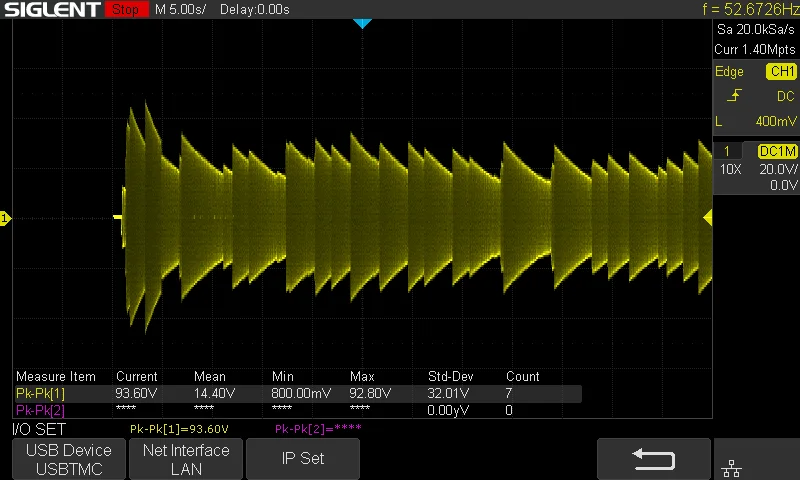
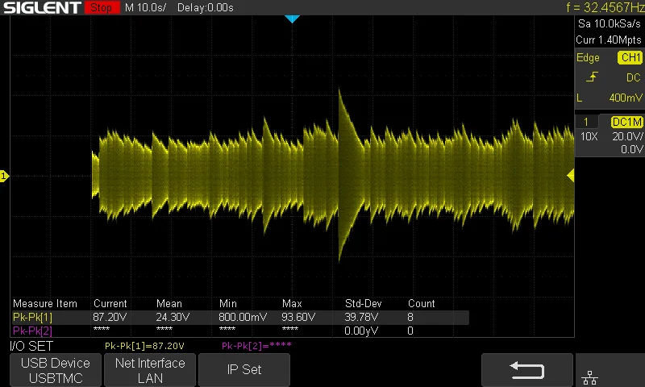
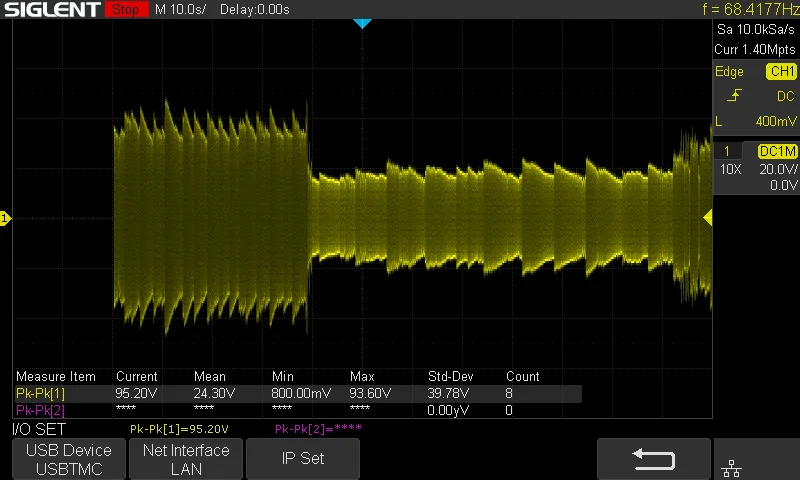
The Prototype in Use
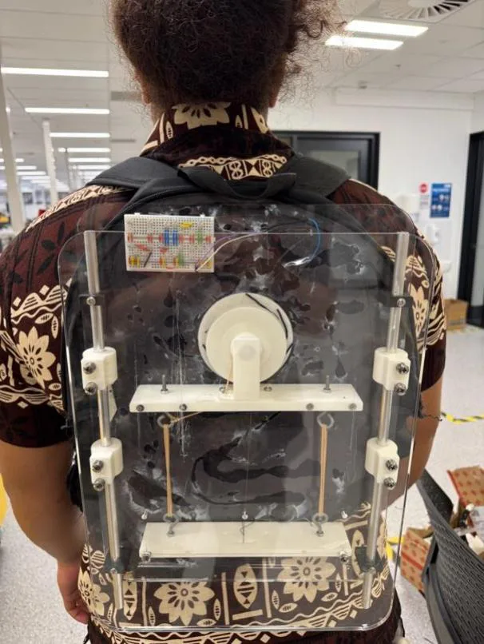
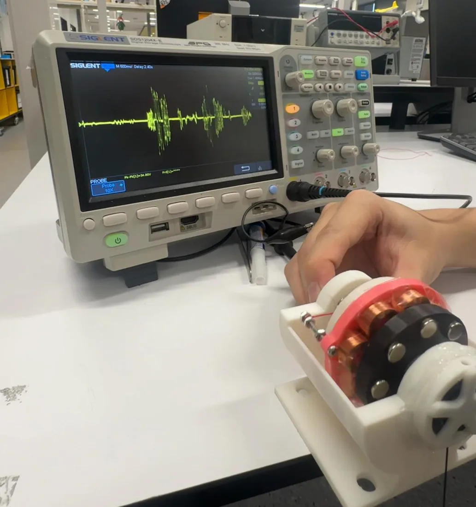
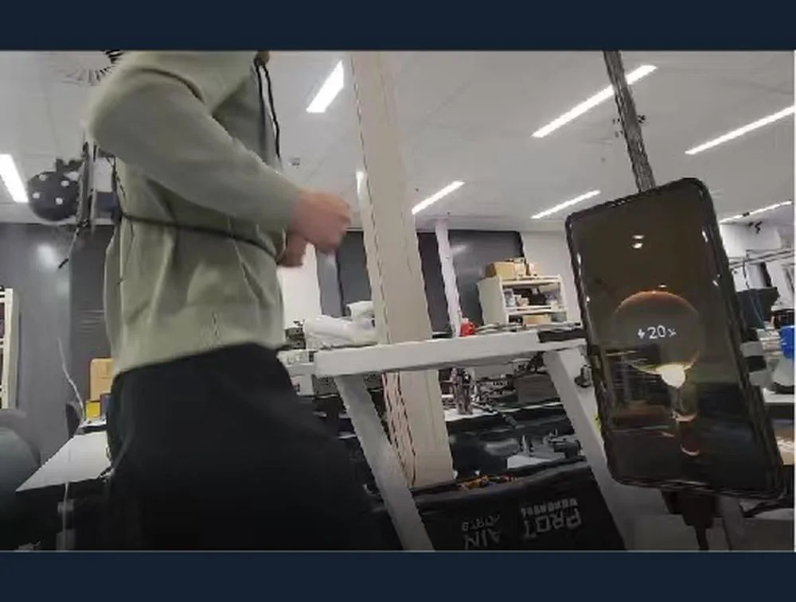
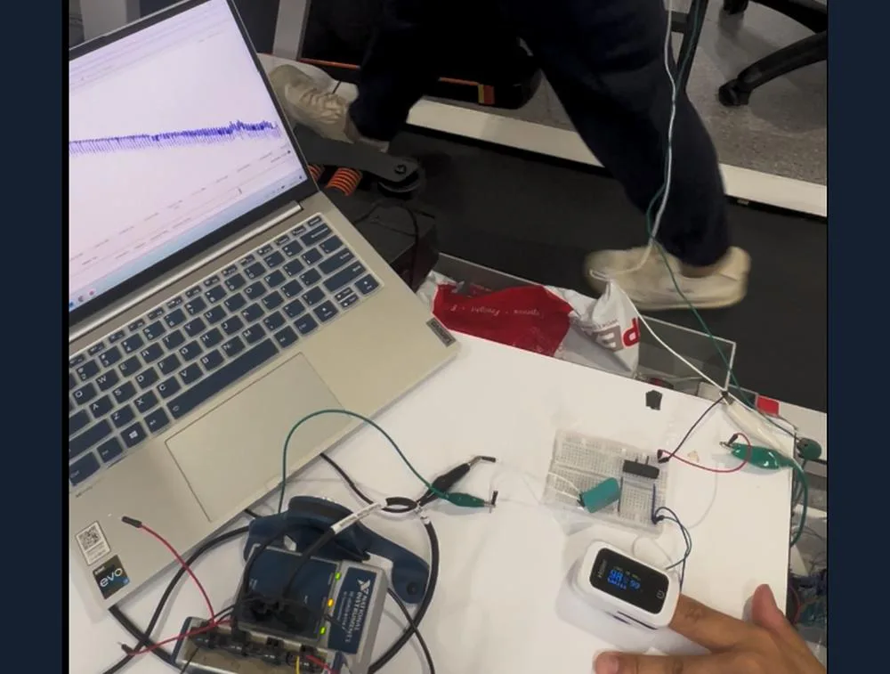
Design Evidence
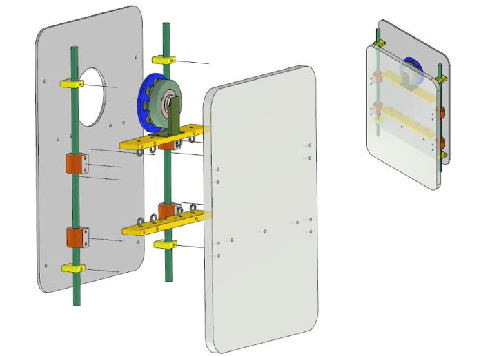
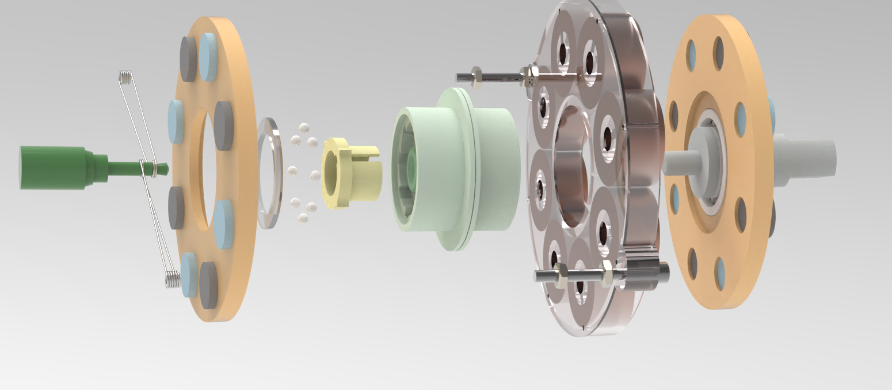
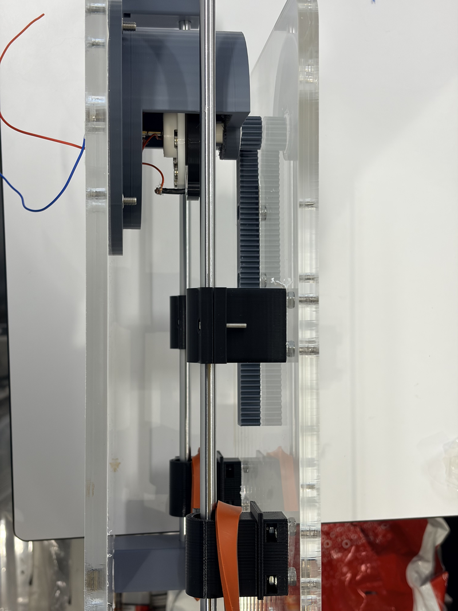
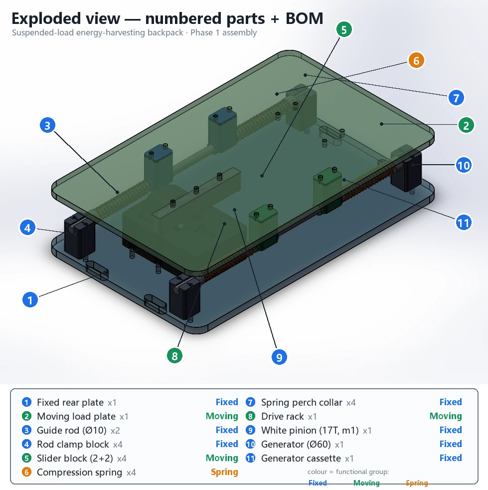
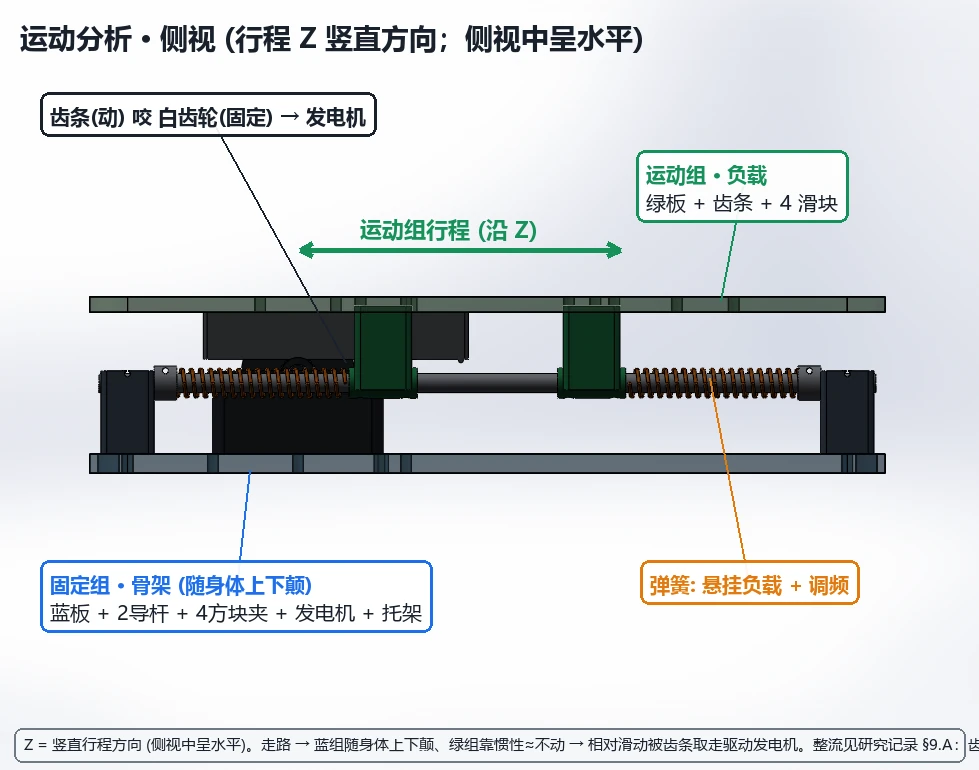
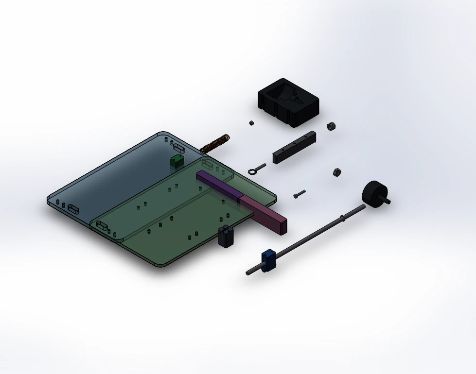
Where It Stands
Next Semester: Pushing the Output Higher
- Sweep the electrical load to find the resistance that extracts the most power.
- Tune the elastic-band stiffness so the payload swings freely without hitting its end stops.
- Log payload mass, displacement and belt speed alongside the voltage, and repeat each speed.
- Measure the energy that actually reaches storage after rectification.
Native CAD, raw oscilloscope data and the full test report are kept within the supervised project. Selected evidence is shown publicly here.